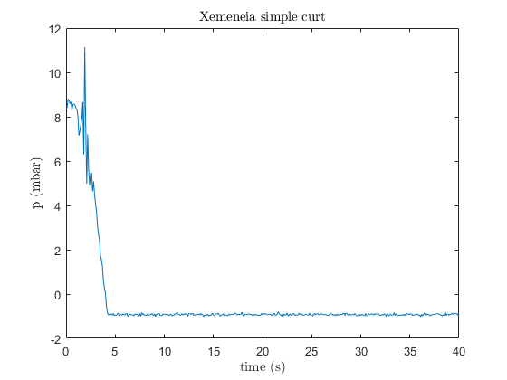
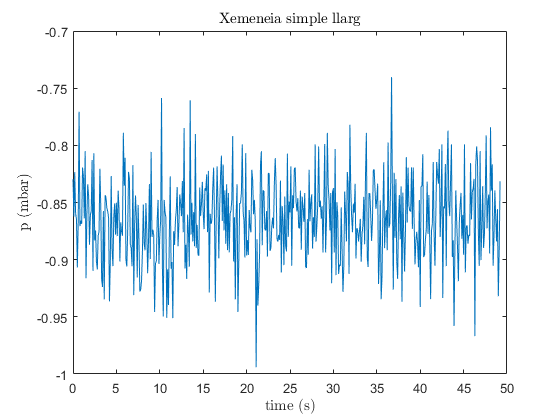

Contents
Set up the Import Options and import the data
opts = spreadsheetImportOptions("NumVariables", 9);
opts.Sheet = "xemeneia curt";
opts.DataRange = "A3:I403";
opts.VariableNames = ["Var1", "Var2", "Var3", "Var4", "Var5", "Var6", "Var7", "times5", "PresinmbargP_difmbar"];
opts.SelectedVariableNames = ["times5", "PresinmbargP_difmbar"];
opts.VariableTypes = ["char", "char", "char", "char", "char", "char", "char", "double", "double"];
opts = setvaropts(opts, ["Var1", "Var2", "Var3", "Var4", "Var5", "Var6", "Var7"], "WhitespaceRule", "preserve");
opts = setvaropts(opts, ["Var1", "Var2", "Var3", "Var4", "Var5", "Var6", "Var7"], "EmptyFieldRule", "auto");
tbl = readtable("C:\Users\Yago\OneDrive - Universitat Politècnica de Catalunya\Q6\EFM\Practicas\P4\M12-xemeneia.xlsx", opts, "UseExcel", false);
Convert to output type
times5 = tbl.times5;
PresinmbargP_difmbar5 = tbl.PresinmbargP_difmbar;
Clear temporary variables
clear opts tbl
Set up the Import Options and import the data
opts = spreadsheetImportOptions("NumVariables", 9);
opts.Sheet = "xemeneia llarg";
opts.DataRange = "A3:I495";
opts.VariableNames = ["Var1", "Var2", "Var3", "Var4", "Var5", "Var6", "Var7", "times5", "PresinmbargP_difmbar"];
opts.SelectedVariableNames = ["times5", "PresinmbargP_difmbar"];
opts.VariableTypes = ["char", "char", "char", "char", "char", "char", "char", "double", "double"];
opts = setvaropts(opts, ["Var1", "Var2", "Var3", "Var4", "Var5", "Var6", "Var7"], "WhitespaceRule", "preserve");
opts = setvaropts(opts, ["Var1", "Var2", "Var3", "Var4", "Var5", "Var6", "Var7"], "EmptyFieldRule", "auto");
tbl = readtable("C:\Users\Yago\OneDrive - Universitat Politècnica de Catalunya\Q6\EFM\Practicas\P4\M12-xemeneia.xlsx", opts, "UseExcel", false);
Convert to output type
times6 = tbl.times5;
PresinmbargP_difmbar6 = tbl.PresinmbargP_difmbar;
Clear temporary variables
clear opts tbl
figure
plot(times5,PresinmbargP_difmbar5)
title('Xemeneia simple curt','Interpreter','latex')
xlabel('time (s)','Interpreter','latex')
ylabel('p (mbar)','Interpreter','latex')
figure
plot(times6,PresinmbargP_difmbar6)
title('Xemeneia simple llarg','Interpreter','latex')
xlabel('time (s)','Interpreter','latex')
ylabel('p (mbar)','Interpreter','latex')
 